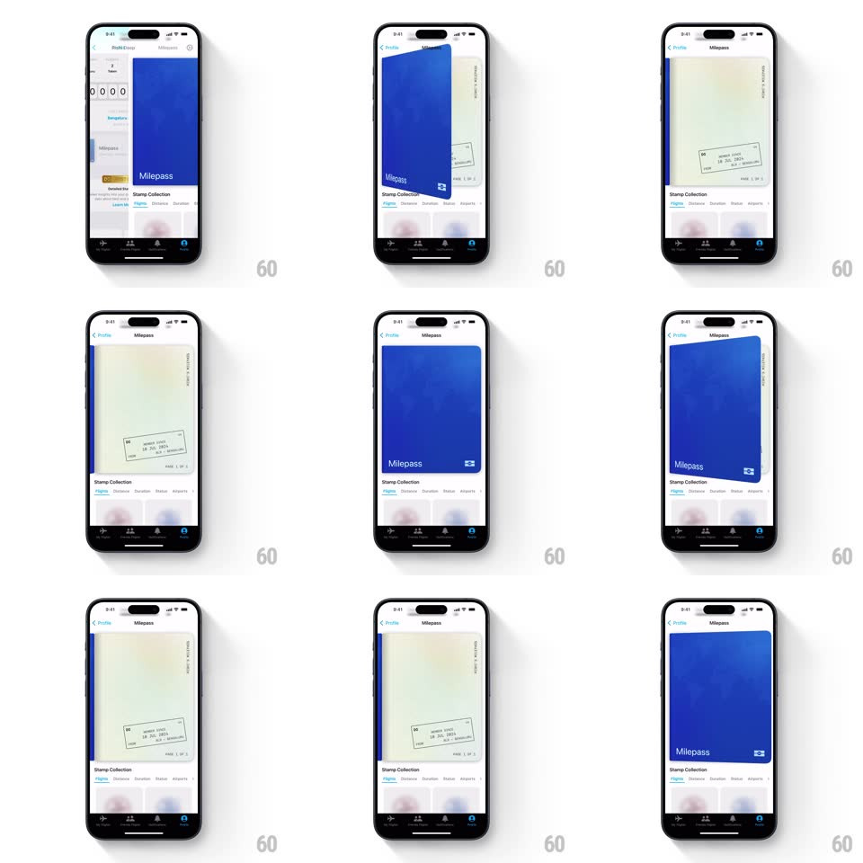

Media
Frame-by-frame

Rebuild this interaction 1:1: Mileways' Milepass card - tap the pass and it flips horizontally in 3D, revealing a skeuomorphic boarding-pass back covered in travel stamps.

Rebuild this interaction 1:1: Mileways' Milepass card - tap the pass and it flips horizontally in 3D, revealing a skeuomorphic boarding-pass back covered in travel stamps.
## Integration
Integration: stack-agnostic spec - springs given as stiffness/damping, timed motions as duration + curve; map every value to your framework and animation library of choice.
## Scene
The profile screen carries a Milepass entry; opening it shows the pass full-width: a deep blue front ("Milepass" wordmark, member chip) above the Stamp Collection tabs. Flipping reveals the back: a pale cream boarding pass with perforated edge, flight details, and an angled ink stamp.
## Motion spec
Pattern: 3D card flip.
- Tap the card: it rotates around its vertical axis (rotateY 0 to 180deg, 600ms, ease-in-out with a slight anticipation: -6deg wind-up over 100ms).
- Perspective stays on (camera distance ~1000px) so the near edge bulges as it turns; a soft shadow sweeps across the face as it passes 90deg.
- Mid-flip (90deg) the face swaps front to back; each face is its own layer with backface-visibility hidden.
- Landing: a small overshoot (182deg settling to 180, spring ~300/22) plus a light haptic; the card's elevation shadow softens as it settles.
- Tap again flips back with the same choreography mirrored.
- The Stamp Collection tabs beneath stay put; only the card flips.
## Calibration
- The flip pivot is the card's horizontal center line, not the screen's.
- Keep the flip under 700ms total - it should feel like handling a physical pass, not a page turn.
## Reduced motion
Crossfade between front and back faces.
## Don't miss
- The back face is deliberately analog: cream paper, dashed perforation, ink stamp - it contrasts the flat blue front.
- The stamp on the back sits at a slight angle (~8deg), like it was hand-stamped.